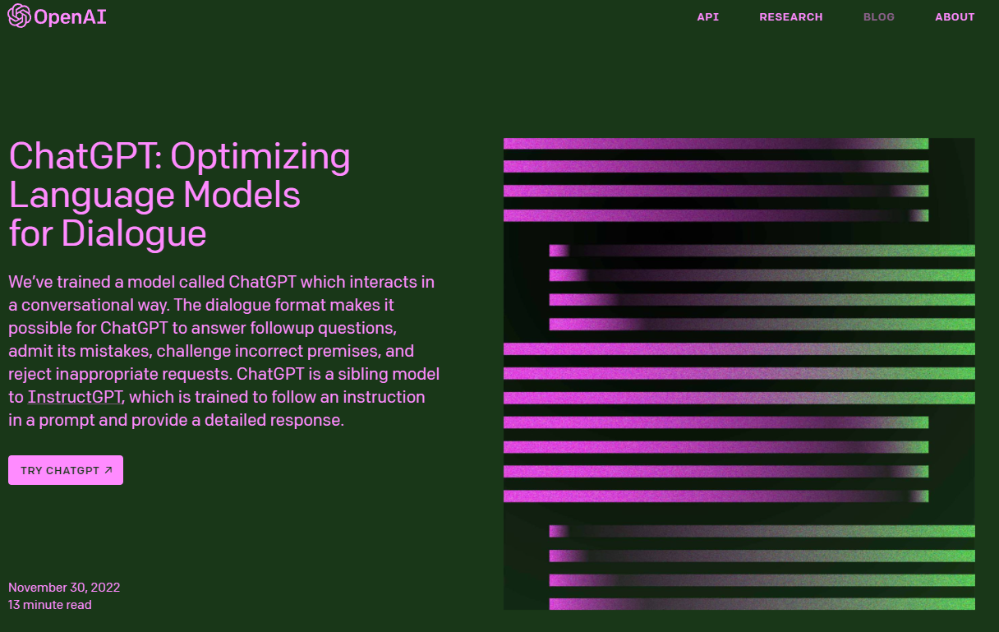

Hello, I am an AI language model developed by OpenAI. I am trained on a diverse range of texts and have been designed to respond to a wide range of questions and generate various types of text, including but not limited to conversational responses, summaries, news articles, poems, and more. My knowledge cutoff is 2021, so I may not have the most up-to-date information. However, I will do my best to provide you with accurate and relevant answers based on the information I have been trained on.
